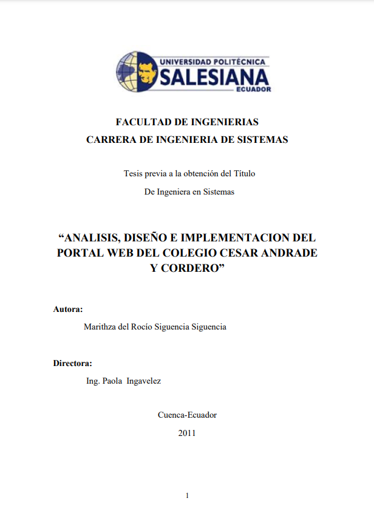
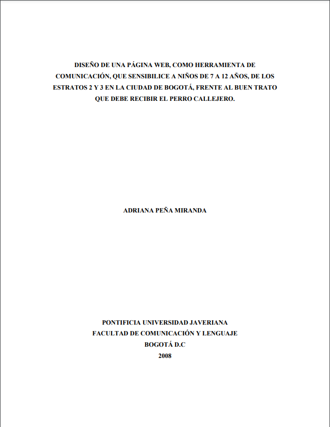

-

Análisis, diseño e implementación del portal web del colegio César Andrade Cordero
Con la presentación de este trabajo se pretende conseguir que todos los lectores, creadores de páginas Web, encuentren aquí una guía fácil a seguir, con procedimientos sencillos y claros para el diseño e implementación de portales Web
-

Diseño de una página web, como herramienta de comunicación, que sensibilice a niños de 7 a 12 años, de los estratos 2 y 3 en la ciudad de Bogotá, frente al buen trato que debe recibir el perro callejero
Este trabajo fue realizado durante el año 2008 y lo que busca es sensibilizar notablemente a los niños de mi ciudad frente a los negativos imaginarios colectivos que hay hacia los perros callejeros.
-

Diseño, implementación y actualización de la página web, para efectos de información y comunicación de la sub línea de investigación educación física en ámbitos dis-formales
El diseño, implementación y actualización de la página web para fines de información y comunicación en la sub-línea de investigación de Educación Física en Ámbitos Disformales es primordial. De no ser así, se estaría privando la difusión de este tema, no solo a nivel nacional y local sino también a nivel mundial